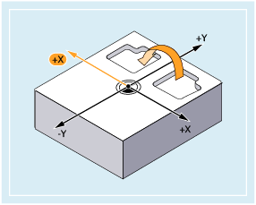
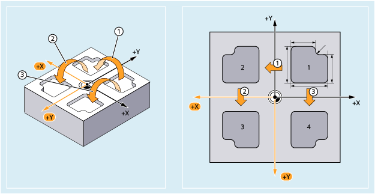
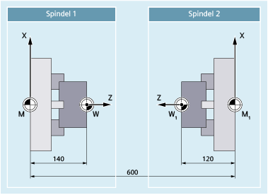

Mit den Befehlen MIRROR und AMIRROR können Werkstückformen an Koordinatenachsen gespiegelt werden. Alle Fahrbewegungen, die danach z. B. im Unterprogramm programmiert sind, werden gespiegelt ausgeführt.
Spiegelungen werden über axiale Richtungswechsel in der gewählten Arbeitsebene programmiert:
Arbeitsebene | Zu spiegelnde Achse | Axialer Richtungswechsel | Syntax 1) |
|---|---|---|---|
G17 | X | Y |
|
Y | X |
| |
G18 | Z | X |
|
X | Z |
| |
G19 | Y | Z |
|
Z | Y |
|
| Absolutes Spiegeln | |
Bezugssystem: | Aktuelles mit G54 ... G57, G505 ... G599 eingestelltes Werkstückkoordinatensystems (ENS) | |
Alleine im Satz: | Ja | |
| Additives Spiegeln | |
Bezugssystem: | Aktuell eingestelltes oder über eine Frame-Anweisung zuletzt programmiertes Werkstückkoordinatensystem | |
Alleine im Satz: | Ja | |
| Geometrieachse, deren Richtung für die Spiegelung gewechselt werden soll Beispielhaft soll folgende Festlegung gelten:
In der Standardeinstellung werden programmierte Achswerte nicht ausgewertet. Stattdessen ist eine Toggle-Funktion aktiv. Der Achswert ist frei wählbar, z. B. "0":
MIRROR ohne Achsangabe schaltet die Spiegelung für alle Achsen aus. Hierbei werden alle Frame-Komponenten des vorher programmierten Frames zurückgesetzt. | |
| Achtung |
Absolute Frame-Anweisungen löschen alle programmierten FramesSoll ein programmierbarer Frame auf bestehenden Frames aufbauen, ist statt der absoluten die additive Frame-Anweisung zu programmieren. |
Die hier gezeigte Kontur (Nr. 1 im Bild) wird einmal als Unterprogramm programmiert. Die drei weiteren Konturen werden durch Spiegelung erzeugt. Der Werkstücknullpunkt wird zentral zu den Konturen angeordnet.
① | Erste Spiegelung zur Fertigung der 2. Kontur Absolutes Spiegeln der Y-Achse durch Richtungswechsel der X-Achse |
② | Zweite additive Spiegelung zur Fertigung der 3. Kontur Additives Spiegeln der X-Achse durch Richtungswechsel der Y-Achse |
③ | Dritte Spiegelung zur Fertigung der 4. Kontur Absolutes Spiegeln der X-Achse durch Richtungswechsel der Y-Achse |
| Programmcode | Kommentar |
|---|---|
| ... | |
| N30 G17 G54 | ; Arbeitsebene X/Y, Werkstücknullpunkt |
| N40 L10 | ; Erste Kontur rechts oben fertigen |
| N50 MIRROR X0 | ; Spiegeln der Y-Achse (Richtungswechsel der X-Achse) |
| N60 L10 | ; Zweite Kontur links oben fertigen |
| N70 AMIRROR Y0 | ; Additives Spiegeln der X-Achse (Richtungswechsel der Y-Achse) |
| N80 L10 | ; Dritte Kontur links unten fertigen |
| N90 MIRROR Y0 | ; MIRROR setzt vorherige Frames zurück. Spiegeln der X-Achse (Richtungswechsel der Y-Achse) |
| N100 L10 | ; Vierte Kontur rechts unten fertigen |
| N110 MIRROR | ; Spiegeln ausschalten |
| N120 G0 X300 Y100 | ; Wegfahren |
| N130 M30 | ; Programmende |
Die eigentliche Bearbeitung wird als Unterprogramm abgelegt, die Abarbeitung an der jeweiligen Spindel durch Spiegelungen und Verschiebungen realisiert.
|  |
| Programmcode | Kommentar |
|---|---|
| ... | |
| N30 TRANS X0 Z140 | ; Nullpunktverschiebung auf W |
| ... | ; Bearbeitung der 1. Seite mit Spindel 1 |
| N100 TRANS X0 Z600 | ; Nullpunktverschiebung auf Spindel 2 |
| N110 AMIRROR Z0 | ; Spiegeln der Z-Achse |
| N120 ATRANS Z120 | ; Nullpunktverschiebung auf W1 |
| ... | ; Bearbeitung der 2. Seite mit Spindel 2 |
Siehe auch:
Programmierbare Spiegelung (MIRROR, AMIRROR): Weitere Informationen
Programmierbare Frames (Übersicht)